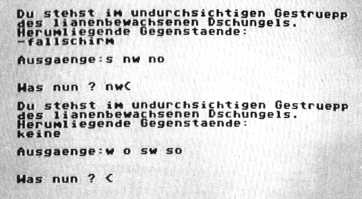

Inka – Schatzsuche am Amazonas
In den Tiefen des Amazonas-Urwaldes wartet der legendäre Inka-Schatz darauf, um von Ihnen entdeckt und geborgen zu werden.

Bei dem Programm Inka handelt es sich – von der Titelgrafik abgesehen – um ein reines Textadventure. Der Spieler schlüpft in die Rolle des Schatzsuchers Anthony Wolf, der von einem Museum beauftragt wird, den legendären Schatz der Inkas zu suchen. Außerdem soll er ein Zeichen eines verschollenen Forschers finden, der vor ihm sein Glück versuchte und seither als vermißt gilt. Sie fliegen mit einem Helikopter in das Zielgebiet und springen mit einem Fallschirm mitten in den Urwald. Hier beginnt das eigentliche Adventure. Inka verfügt über mehr als 50 Räume mit fast 40 Rätseln. Das Vokabular beläuft sich auf etwa 100 Verben und Nomen. Wegen des großen Sprachschatzes wurde auf eine Wortliste verzichtet. Sämtliche Befehle können abgekürzt werden (»GE« für »GEHE« oder »U« für »UHR«). Der Klammeraffe (@) bewirkt eine Wiedergabe des zuletzt eingegebenen Befehls.
Der Spielstand kann durch »SAVE« oder »LOAD« auf Kassette oder Diskette gespeichert und geladen werden.
(T. Mahnig/W. Borucki/dm)